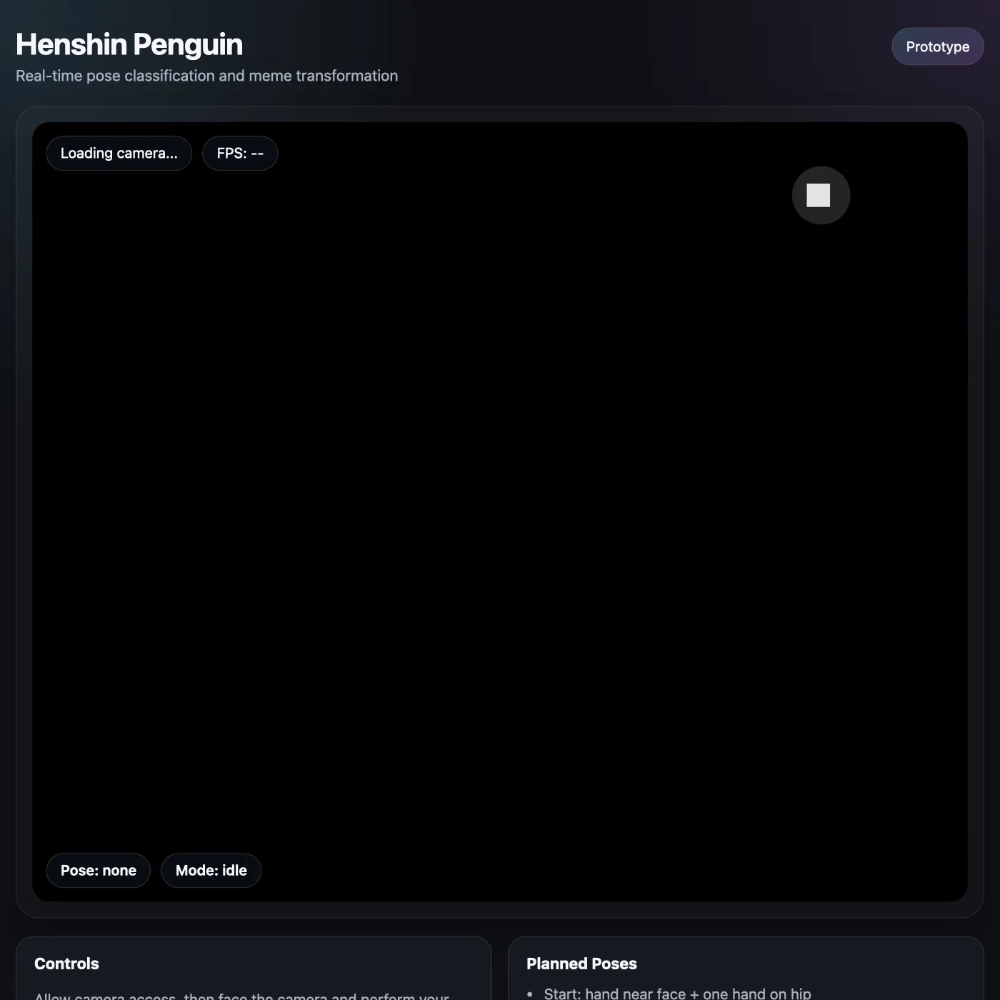
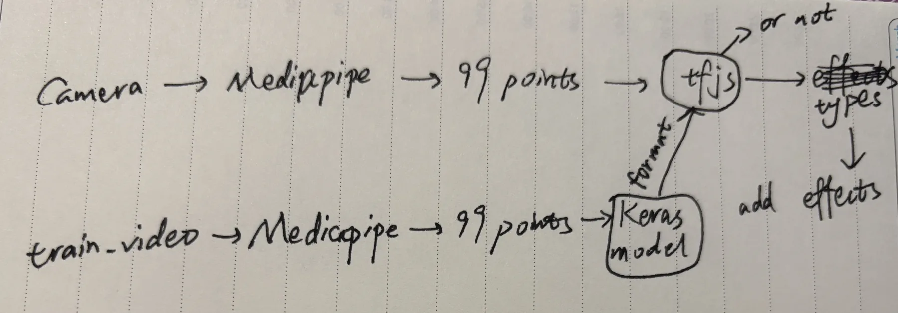
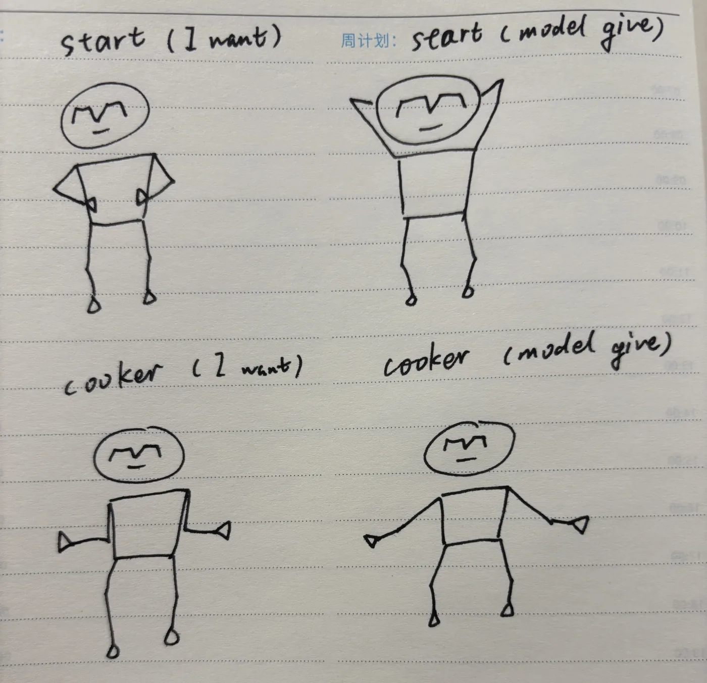

REAL-TIME ML · WEB INTERACTION
Henshin Penguin
一个用身体动作触发视觉变身的浏览器实验：MediaPipe 从摄像头画面提取姿态关键点，轻量 MLP 完成分类，再由 TensorFlow.js 在浏览器端实时推理并驱动企鹅角色效果。
实时 Demo 需要摄像头权限，并依赖浏览器加载 MediaPipe 与 TensorFlow.js。部署到 HTTPS 后可直接运行；本地预览可在 localhost 下使用。
33MediaPipe 身体关键点
99Dx / y / z 特征向量
97.6%独立测试视频准确率
TF.js浏览器端实时推理
运行界面
摄像头画面、姿态标签、帧率和企鹅变身效果在同一浏览器界面中运行。模型与渲染资源均在客户端加载，不需要把摄像头画面上传到服务器。

技术链路
采集
在不同距离、角度、光线和服装条件下录制姿态视频。
提取
MediaPipe 将每帧转换为 33 个三维关键点，共 99 个输入特征。
训练
Keras MLP 使用约 99–64–32–N 的结构完成姿态分类。
部署
模型转换为 TensorFlow.js，在浏览器中连续推理并触发视觉效果。


评估与反思
两类模型在独立测试视频上达到 97.6% 准确率，但浏览器实时输入仍出现波动。这说明离线测试集与真实摄像头输入之间存在分布差异。项目最终减少姿态类别，并通过间隔推理与连续多帧确认提高稳定性。下一步更有效的改进不是继续追求离线分数，而是直接从浏览器采集训练数据，并引入短时间窗口建模动作序列。